File: 000690.gt.txt (if the image is defective, simply delete all Arabic text and the line will be excluded)
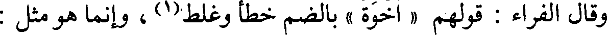
وقال الفراء: قولهم « أخوة » بالضم خطأ وغلط(1) ، وإنما هو مثل :
File: 000691.gt.txt (if the image is defective, simply delete all Arabic text and the line will be excluded)
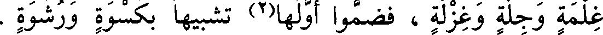
غلمة وجلة وغزلة ، فضموا أولها(2) تشبيها بكسوة ورشوة .
File: 000692.gt.txt (if the image is defective, simply delete all Arabic text and the line will be excluded)
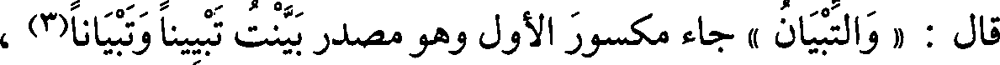
قال : « والتبيان » جاء مكسور الأول وهو مصدر بينت تبيينا وتبيانا(3) ،
File: 000693.gt.txt (if the image is defective, simply delete all Arabic text and the line will be excluded)
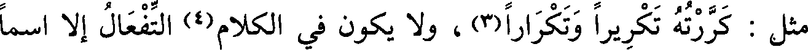
مثل : كررته تكريرا وتكرارا(3) ، ولا يكون في الكلام(4) التفعال إلا اسما
File: 000694.gt.txt (if the image is defective, simply delete all Arabic text and the line will be excluded)
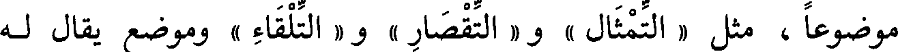
موضوعا ، مثل « التمثال » و« التقصار » و « التلقاء » وموضع يقال له
File: 000695.gt.txt (if the image is defective, simply delete all Arabic text and the line will be excluded)
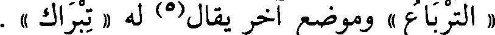
« الترباع » وموضع آخر يقال(5) له « تبراك » .
File: 000696.gt.txt (if the image is defective, simply delete all Arabic text and the line will be excluded)
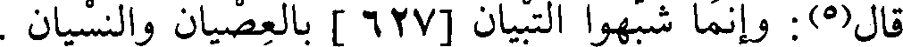
قال(5): وإنما شبهوا التبيان [627 ] بالعصيان والنسيان .
File: 000697.gt.txt (if the image is defective, simply delete all Arabic text and the line will be excluded)
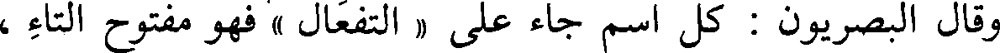
وقال البصريون : كل اسم جاء على « التفعال » فهو مفتوح التاء ،
File: 000698.gt.txt (if the image is defective, simply delete all Arabic text and the line will be excluded)
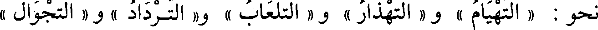
نحو : « التهيام » و « التهذار » و « التلعاب » و« الترداد » و « التجوال »
File: 000699.gt.txt (if the image is defective, simply delete all Arabic text and the line will be excluded)
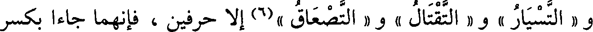
و « التسيار » و « التقتال » و « التصعاق »(6) إلا حرفين ، فإنهما جاءا بكسر
File: 000700.gt.txt (if the image is defective, simply delete all Arabic text and the line will be excluded)
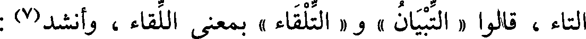
التاء ، قالوا « التبيان » و « التلقاء » بمعنى اللقاء ، وأنشد(7) :
File: 000701.gt.txt (if the image is defective, simply delete all Arabic text and the line will be excluded)
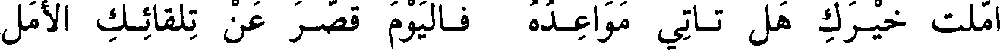
أملت خيـرك هل تـأتي مواعـده فـاليوم قصـر عن تلقائـك الأمل
File: 000702.gt.txt (if the image is defective, simply delete all Arabic text and the line will be excluded)
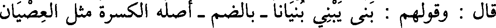
قال : قولهم : بنى يبني بنيانا - بالضم - أصله الكسرة مثل العصيان
File: 000703.gt.txt (if the image is defective, simply delete all Arabic text and the line will be excluded)
والغشيان ، وكذلك مصادر هذا الباب ، قال : وسمعت « الطغيان
File: 000704.gt.txt (if the image is defective, simply delete all Arabic text and the line will be excluded)
والطغيان » ، و « الغنيان والغنيان » والكسر أحب إلي فيه(8) .
File: 000705.gt.txt (if the image is defective, simply delete all Arabic text and the line will be excluded)
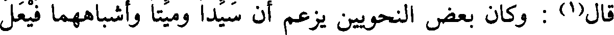
قال(1) : وكان بعض النحويين يزعم أن سيدا ميتا وأشباههما فيعل
File: 000706.gt.txt (if the image is defective, simply delete all Arabic text and the line will be excluded)
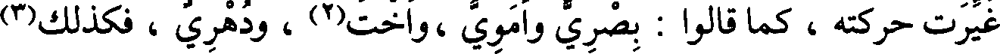
غيرت حركته ، كما قالوا : بصري وأموي ،واخت(2) ، ودهري ، فكذلك(3)
File: 000707.gt.txt (if the image is defective, simply delete all Arabic text and the line will be excluded)
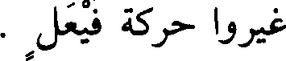
غيروا حركة فيعل .
File: 000708.gt.txt (if the image is defective, simply delete all Arabic text and the line will be excluded)
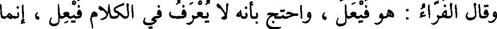
وقال الفراء : هو فيعل ، واحتج بأنه لا يعرف في الكلام فيعل ، إنما
File: 000709.gt.txt (if the image is defective, simply delete all Arabic text and the line will be excluded)
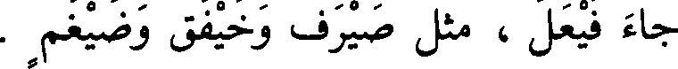
جاء فيعل ، مثل صيرف وخيفق وضيغم .
File: 000710.gt.txt (if the image is defective, simply delete all Arabic text and the line will be excluded)
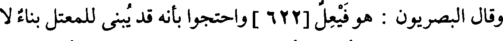
وقال بصريون : هو فيعل [622 ] واحتجوا بأنه قد يبنى للمعتل بناء لا
File: 000711.gt.txt (if the image is defective, simply delete all Arabic text and the line will be excluded)
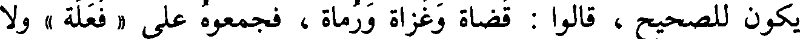
يكون للصحيح ، قالوا : قضاة وغزاة ورماة ، فجمعوه على « فعلة » ولا
File: 000712.gt.txt (if the image is defective, simply delete all Arabic text and the line will be excluded)
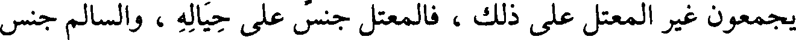
يجمعون غير المعتل على ذلك ، فالمعتل جنس على حياله ، والسالم جنس
File: 000713.gt.txt (if the image is defective, simply delete all Arabic text and the line will be excluded)
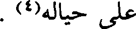
على حياله(4) .
File: 000714.gt.txt (if the image is defective, simply delete all Arabic text and the line will be excluded)
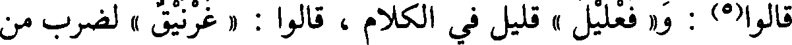
قالوا(5) : و« فعليل » قليل في الكلام ، قالوا : « غرنيق » لضرب من
File: 000715.gt.txt (if the image is defective, simply delete all Arabic text and the line will be excluded)
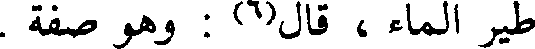
طير الماء ، قال(6) : وهو صفة .
File: 000716.gt.txt (if the image is defective, simply delete all Arabic text and the line will be excluded)
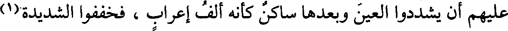
عليهم أن يشددوا العين وبعدها ساكن كأنه ألف إعراب ، فخففوا الشديدة(1)
File: 000717.gt.txt (if the image is defective, simply delete all Arabic text and the line will be excluded)
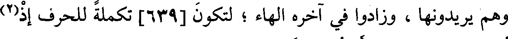
وهم يريدونها ، وزادوا في آخره الهاء ؛ لتكون [639] تكملة للحرف إذ(2)
File: 000718.gt.txt (if the image is defective, simply delete all Arabic text and the line will be excluded)
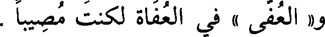
و« العفي » في العفاة لكنت مصيبا .
File: 000719.gt.txt (if the image is defective, simply delete all Arabic text and the line will be excluded)
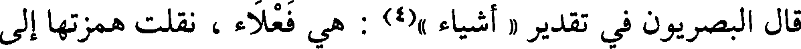
قال البصريون في تقدير « أشياء »(4) : هي فعلاء، نقلت همزتها إلى
To Save: `Ctrl+s`, make sure to choose `Webpage, complete`!